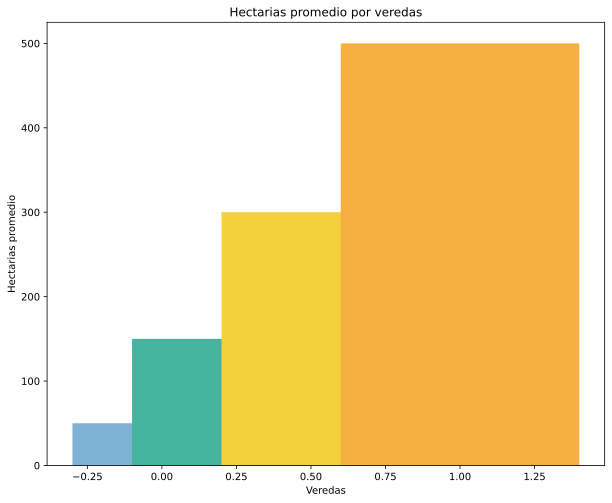
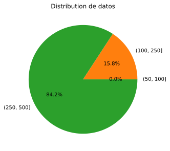

<ion-content>
  <div class="banner"></div>
  <section class="container-fluid my-5" id="home">
    <div class="row">
        <div class="col-12 col-md-6  text-center align-self-center">
            <h2> Tablas de Santafe de Antioquia</h2>
            <iframe src="../../assets/view/tabla_Quitasol.html" class="w-100"height="500px"></iframe>
        </div>
        <div class="col-12 col-md-6">
            <div class="row"> 
              <h1 class="text-center">Analisis Bello</h1>
              <h4></h4>
            </div>
            <div class="row">
                <div class="col-12 col-md-6"></div>
                <div class="col-12 col-md-6"></div>
            </div>
        </div>
  </div >
  </section>
  <section class="container-fluid my-5">
    <div class="row">
        <div class="col-12 col-md-6">
            <p></p>
        </div>
        <div class="col-12 col-md-6">
            <iframe src="https://www.google.com/maps/embed?pb=!1m18!1m12!1m3!1d253687.44361840963!2d-76.05770476617984!3d6.5385626757397315!2m3!1f0!2f0!3f0!3m2!1i1024!2i768!4f13.1!3m3!1m2!1s0x8e45c7f203519c81%3A0x120c657dee28c835!2sSanta%20F%C3%A9%20de%20Antioquia%2C%20Antioquia!5e0!3m2!1ses-419!2sco!4v1686169992520!5m2!1ses-419!2sco" width="600" height="450" style="border:0;" allowfullscreen="" loading="lazy" referrerpolicy="no-referrer-when-downgrade"></iframe>
        </div>
    </div>
  </section>
  <footer class="p-5 container-fluid bg-dark text-white fw-bold" id="footer">
    <div class="row">
        <div class="col-12 col-md-3 text-end">
            <h3> Hotel Testla</h3>
        </div>
        <div class="col-12 col-md-6 text-end align-self-center">
            <h3> Ven a visitarnos, lo disfrutarás desde el primer día.</h3>
            <a href="">
                <ion-icon name="logo-instagram" class="fs-1 text-white me-2"></ion-icon>
            </a>
            <a href="">
              <ion-icon name="logo-whatsapp" class="fs-1 text-white me-2"></ion-icon>
            </a>
            <a href="">
                <ion-icon name="logo-facebook" class="fs-1 text-white me-2"></ion-icon>
            </a>
        </div>
    </div>
</footer>
</ion-content>